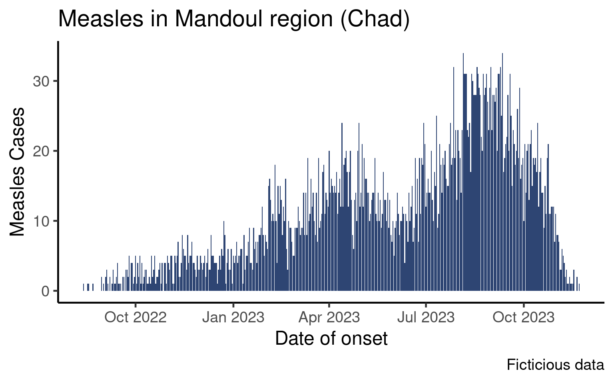
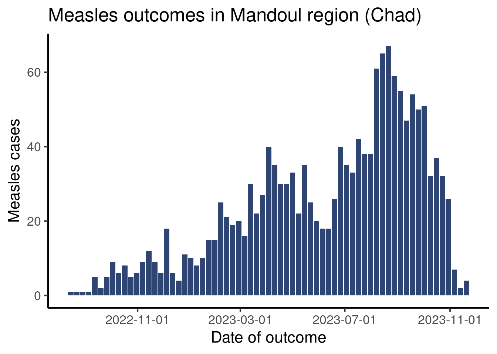
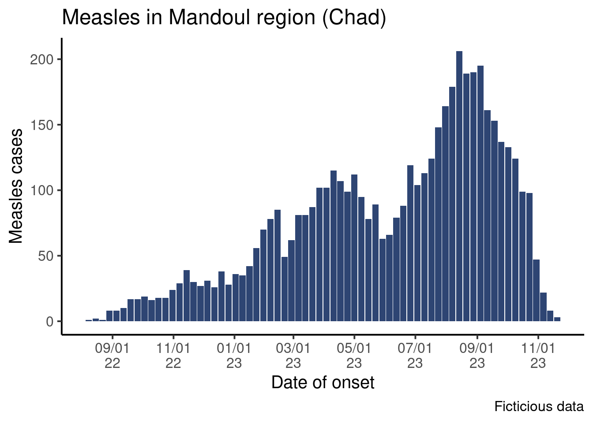

Weekly Epicurves
Satellite
Visualization
Plot weekly epicurves and improve date labels on the x-axis
Objectives
In the epicurve session you learned how to plot an epicurve of the number of cases per day:
This graph is aggregated by day, which is a reasonable level of aggregation if the outbreak is short or if you wish to zoom on a short period. As epidemiologists we however often want to plot data by week.
In this tutorial we will learn two ways of aggregating data by week, plot the data and tweak the date labels.
Setup
We will build on code from the epicurve session so you may either write your code in the script associated with that session or create a new script.
Create a new script for this tutorial or open the script from the epicurve lesson.
Make sure the following packages are installed and loaded:
{here}to write robust absolute paths,{rio}to import the data,{dplyr}to manipulate data,{ggplot2}to create the graphs,{lubridate}to manage dates and times{scales}to create prettier labels
If it is not already done, import the clean data (moissala_linelist_clean_EN.rds) into a df_linelist data frame and create a new section in your script called PREPARE DATA.
As we did in the core session, the examples in this lesson will be shown for outcomes and you will code the classic epicurve for date of onset in the exercises.
Aggregate Data by Week
We will to discuss two ways of aggregating data by weeks. You may be more familiar with the first one (using week numbers to identify weeks), but we will to focus more heavily on a more robust way (using the firs day of the week to identify weeks).
Using Week Numbers
Probably the most intuitive way of thinking of weekly aggregated data is to think in terms of week numbers, as aggregated data from MoH are often in this format, and you probably created a lot of epicurves with week numbers yourselves.
Theisoweek() from the {lubridate} packages takes a date (or a vector of dates) and returns the associated ISO week.
example_date <- as.Date('2025-02-24')
example_date[1] "2025-02-24"isoweek(example_date)[1] 9We can use this function to create a week_outcome_number in our data frame:
df_linelist <- df_linelist |>
mutate(week_outcome_number = isoweek(date_outcome))The head of the date_outcome and week_outcome_number columns looks like this:
date_outcome week_outcome_number
1 2022-08-18 33
2 2022-08-28 34
3 2022-09-03 35
4 2022-09-12 37
5 2022-09-10 36
6 2022-09-18 37Your turn. Use the mutate() and isoweek() functions to create a new column in your data frame called week_onset_number that contains the ISO week associated with every onset date. The head of date_onset and week_onset_number columns should look like this:
date_onset week_onset_number
1 2022-08-13 32
2 2022-08-18 33
3 2022-08-17 33
4 2022-08-22 34
5 2022-08-30 35
6 2022-08-30 35Now, you could use this column to aggregate data by week using count() and then plot the weekly aggregated data using {ggplot2} with a code very similar to what we saw in the core epicurve session.
There is a problem, though. With isoweek() there is a first week in 2022, but also in 2023, 2024 and so on. With a short outbreak that would be only in 2022, this would be fine. However, our data frame gathers data at the whole region scale, and the dates range from 2022 to 2023. So if we were to just count the number of patients by week number, this table would be wrong:
# WRONG
df_linelist |>
count(week_onset_number) |>
head(10) week_onset_number n
1 1 36
2 2 35
3 3 42
4 4 56
5 5 70
6 6 78
7 7 85
8 8 49
9 9 62
10 10 81Instead, we could count by week stratified by years:
df_linelist |>
mutate(year_onset = isoyear(date_onset)) |>
count(year_onset, week_onset_number) |>
head(10) year_onset week_onset_number n
1 2022 32 1
2 2022 33 2
3 2022 34 1
4 2022 35 8
5 2022 36 8
6 2022 37 10
7 2022 38 17
8 2022 39 17
9 2022 40 19
10 2022 41 16These counts are perfectly correct. You could plot them using faceting by year, or just filter a given year and plot the weekly numbers with the ISO week number on the x-axis. For example:
df_linelist |>
mutate(year_onset = isoyear(date_onset)) |>
count(year_onset, week_onset_number) |>
ggplot(aes(x = week_onset_number,
y = n)) +
geom_col(fill = "#2E4573") +
theme_classic(base_size = 16) +
facet_wrap(vars(year_onset), # Magic to make subplots very easily
ncol = 1)If you have not read about facetting yet, do no worry, think of this plot as a teaser of how easily you can make subplots by a variable! But this is out of the scope of this tutorial. Instead, we will show you another way of aggregating data by week which is robust to multi-year data.
Using the First Day of the Week
An alternative way of aggregating by week is to use the function floor_date() (also from the {lubridate} package), which returns the first date of a given period. You can think of it as a sort of rounding to the smallest value, but for dates.
The function has a unit argument that allows you to choose the period of interest (week, month…) and a week_start argument where you can pass the first day of the week (Mondays are 1).
df_linelist <- df_linelist |>
mutate(
week_outcome_monday = floor_date(date_outcome,
unit = "week",
week_start = 1)
)Let’s look at all these different time variables to figure out what’s happening:
df_linelist |>
select(id, date_outcome, week_outcome_number, week_outcome_monday) |>
arrange(date_outcome) |> # Sort the data by date
head(n = 10) id date_outcome week_outcome_number week_outcome_monday
1 1 2022-08-18 33 2022-08-15
2 2 2022-08-28 34 2022-08-22
3 10 2022-09-03 35 2022-08-29
4 16 2022-09-10 36 2022-09-05
5 22 2022-09-12 37 2022-09-12
6 14 2022-09-12 37 2022-09-12
7 41 2022-09-16 37 2022-09-12
8 20 2022-09-17 37 2022-09-12
9 17 2022-09-18 37 2022-09-12
10 23 2022-09-19 38 2022-09-19It might be easier to visualize if we calculate the day of the week associated with each date using the function wday() (which also belong to the {lubridate} package, are you maybe seeing a pattern here üòâ):
df_linelist |>
# Get the name of the day for several date variables, to understand a bit better
mutate(
day_outcome = wday(date_outcome,
label = TRUE,
abbr = FALSE),
they_are_mondays = wday(week_outcome_monday,
label = TRUE,
abbr = FALSE)) |>
arrange(date_outcome) |> # Sort the data by date
select(date_outcome,
day_outcome,
week_outcome_number,
week_outcome_monday,
they_are_mondays) |>
head(n = 10) date_outcome day_outcome week_outcome_number week_outcome_monday
1 2022-08-18 jeudi 33 2022-08-15
2 2022-08-28 dimanche 34 2022-08-22
3 2022-09-03 samedi 35 2022-08-29
4 2022-09-10 samedi 36 2022-09-05
5 2022-09-12 lundi 37 2022-09-12
6 2022-09-12 lundi 37 2022-09-12
7 2022-09-16 vendredi 37 2022-09-12
8 2022-09-17 samedi 37 2022-09-12
9 2022-09-18 dimanche 37 2022-09-12
10 2022-09-19 lundi 38 2022-09-19
they_are_mondays
1 lundi
2 lundi
3 lundi
4 lundi
5 lundi
6 lundi
7 lundi
8 lundi
9 lundi
10 lundiThis illustrates how week_outcome_number and week_outcome_monday are two ways to have only one value representing a week. While week numbers are not unique as discussed before, dates are!
Add a new command to your mutate() call and create the variable week_onset_monday that contains the first day of the week for patient date of onset. Choose your argument as if the first day of the week is a Monday.
Tip
Go read the help page for floor_date() to check out the list of possible units.
Actually Count Things
Now that we have variables that represent week, it’s time to do the actual aggregation, ie count things!
Count the number of patients per week of of onset, using the week start (week_onset_monday).
Here are the first ten lines of what it should look like:
week_onset_monday n
1 2022-08-08 1
2 2022-08-15 2
3 2022-08-22 1
4 2022-08-29 8
5 2022-09-05 8
6 2022-09-12 10
7 2022-09-19 17
8 2022-09-26 17
9 2022-10-03 19
10 2022-10-10 16Draw the Epicurve
So far so good, now we can pipe that aggregated data frame into our plot commands, making a couple adjustments to make it work.
Create a ggplot with the same look at the epicurve from the epicurve core session, but with the first day of the week on the x-axis. Don’t forget to update axes names.
It should look like that:
We see dates on the x-axis, but a bar represent data for a week starting on Monday.
Improve the Axis
Now, let’s learn how to tweak the appearance of that date axis!
{ggplot2} automatically provided labels for the x-axis, trying to adjust for the range of data. That default may not always please us so we may want to manually force the labels to be more or less frequent, or change their format.
To modify the appearance of the axis, we will use another {ggplot2} function, from the scale family: scale_x_date().
Modify Breaks
The breaks controls the frequency of ticks on the axis.
The scale_x_date() function has a date_breaks argument that accepts the interval between two labels in a string. The string can have the following format: "1 week", "2 weeks", "4 months", "2 years" etc.
df_linelist |>
count(week_outcome_monday) |>
ggplot(aes(x = week_outcome_monday,
y = n)) +
geom_col(fill = "#2E4573") +
labs(x = "Date of outcome",
y = "Measles cases",
title = "Measles outcomes in Mandoul region (Chad)") +
scale_x_date(date_breaks = "4 months") + # Define breaks
theme_classic(base_size = 16)Warning: Removed 1 row containing missing values or values outside the scale range
(`geom_col()`).
Your turn! Modify your code so that the x-axis displays labels at reasonable intervals on your screen.
Improve Labels
Now that we changed the interval between ticks, let’s improve the labels themselves (the way dates are displayed on the axis). By default the labels are in the form year-month-day. We are going to show you two ways to change that.
The scale_x_date() function has a label argument, that accepts several entries, among which a vector containing the dates, but also a function that generates labels from the breaks. The {scales} package provides such a function, label_date_short(), that attempts to create efficient and short labels for dates.
df_linelist |>
count(week_outcome_monday) |>
ggplot(aes(x = week_outcome_monday,
y = n)) +
geom_col(fill = "#2E4573") +
labs(x = "Date of outcome",
y = "Measles outcomes",
title = "Measles outcomes in Mandoul region (Chad)") +
scale_x_date(date_breaks = "2 months",
labels = scales::label_date_short()) + # Short labels
theme_classic(base_size = 16)Warning: Removed 1 row containing missing values or values outside the scale range
(`geom_col()`).Modify your code and use label_date_short() to generate labels.
If you prefer to have full control on how to format dates, R has a syntax to describe date and time formats. There is a long help page with all the syntax items accessible with the help(strptime) command, but here are a few of the most useful elements to format a date label:
Day:
%d: from 01 to 31%e: from 1 to 31
Month:
%b: abbreviated month name (current locale on your computer)%B: full month name (current locale on your computer)%m: month as a decimal number
Year:
%y: Year without the century (two digits)%Y: year in four digits
Special separators:
%n: newline%t: tab
You can assemble these items in a string, that you pass to different functions that accept a format as argument. Here we will pass it to the format() function to quickly see what display it creates, but after that we will use them in our graph command.
# Create a date vector to explore different formats
some_dates <- as.Date(c("2024-10-06", "2024-12-15", "2025-01-20"))
# Let's try out different syntax
format(some_dates, "%Y-%b-%d")[1] "2024-oct.-06" "2024-déc.-15" "2025-janv.-20"format(some_dates, "%Y-%b")[1] "2024-oct." "2024-déc." "2025-janv."format(some_dates, "%Y %B %d")[1] "2024 octobre 06" "2024 décembre 15" "2025 janvier 20" format(some_dates, "%y/%m/%d")[1] "24/10/06" "24/12/15" "25/01/20"format(some_dates, "%d/%m/%Y")[1] "06/10/2024" "15/12/2024" "20/01/2025"Back to the graph! The scale_x_date() function has an argument date_labels that accepts a string of text in the above format for the date labels.
df_linelist |>
count(week_outcome_monday) |>
ggplot(aes(x = week_outcome_monday,
y = n)) +
geom_col(fill = "#2E4573") +
labs(x = "Date of outcome",
y = "Measles cases",
title = "Measles outcomes in Mandoul region (Chad)") +
scale_x_date(
date_breaks = "2 months", # Define intervals betw. labels
date_labels = "%Y%n%b%n%d") + # Define format of labels
theme_classic(base_size = 16)Warning: Removed 1 row containing missing values or values outside the scale range
(`geom_col()`).Modify the code of your graph to have labels look like this:

Done!
Congratulations! Dates are complicated, and their formatting is often scary, but we hope this little introduction showed you some nice tricks for your epicurves!
Going Further
Extra execices
- Use date format like this: “2024-oct.”, “2024-dec.”
- Create an epicurve with the date of consultation, using the first day of the week on the x-axis (format dates the way you prefer)
- Create an epicurve for 2023 data using the date of hospital admission and the ISO week number on the x-axis.
Challenge
- Do the epicurve for the date of onset, but instead of aggregating by week, aggregate it by month. Find an appropriate format for the labels.
Resources
- Chapter of the Elegant graphics for data analyses book on date scales
- Get started with lubridate from the package homepage.